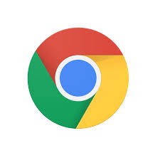
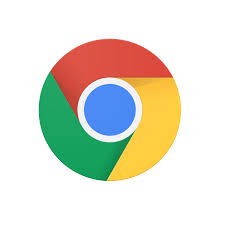

Sobre Mi:
Me llamo Francisca D´Agata y voy a 3°C en Colegio Calasanz en Buenos Aires, Argentina. Mis hobbies favoritos son comer y juntarme con mis amigos.
Me llamo Francisca D´Agata y voy a 3°C en Colegio Calasanz en Buenos Aires, Argentina. Mis hobbies favoritos son comer y juntarme con mis amigos.
Esta pagina se trata de una evaluación para la materia de informática, donde yo creo mi pagina personal para aplicar todos mis conocimientos. Estamos aprendiendo a construir páginas web usando HTML y CSS en Visual Studio Code.


 
